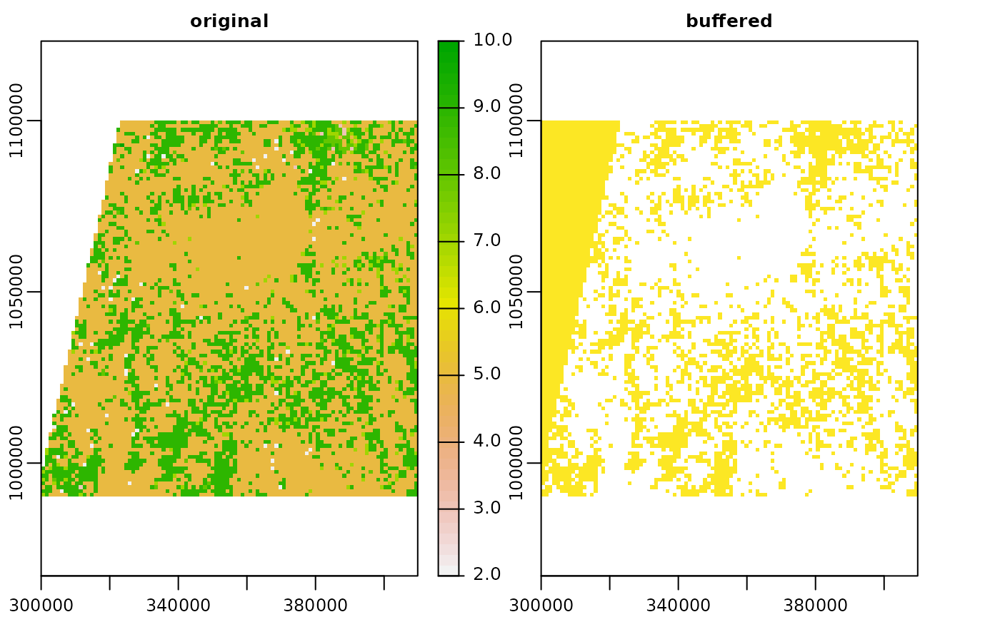

cloudmasking.RmdIn this vignette functionality of the mapme.vegetation package to enrich the sen2cor cloud mask is presented. The issue with the sen2cor scene cover classification (SCL) is that cloud shadows and pixels at the edge of clouds are not really well detected. When this is not accounted for, the quality of subsequent analysis can be seriously limited. mapme.vegetation supplies users with a fast routine based on GRASS GIS to select pixel which shall be masked and apply a spatial buffer to enrich the original SCL classification. As a prerequisite to use this functionality it is assumed that a working GRASS installation is found on your machine. We will use exemplary files which have been reduced in their resolution in order to be able to ship them with the package.
library(mapme.vegetation)
s2_files = list.files(system.file("extdata/s2a", package = "mapme.vegetation"), ".tif", full.names = T)
scl_files = s2_files[grep("SCL", s2_files)]
rundir = file.path(tempdir(), "mapme.vegetation")
dir.create(rundir, showWarnings = F)
scl_buffer(scl_files = scl_files,
mask_values = c(1,2,3,7,8,9,10,11), # which values to mask?
mask_buffer = 500, # distance of buffers (in meters), here exceptionally large to show differences
grass_bin = "/usr/bin/grass78",
threads = 1,
outdir = rundir)Let’ us compare the original SCL scene to the buffered version. We will use the terra package for a quick visualization.
s2_files = list.files(system.file("extdata/s2a", package = "mapme.vegetation"), ".tif", full.names = T)
scl_files = s2_files[grep("SCL", s2_files)]
library(terra)
#> terra version 1.4.11
scl_buffered = rast(list.files(system.file("extdata/scl", package = "mapme.vegetation"), ".tif", full.names = T)[1])
scl_original = rast(scl_files[1])
scl = c(scl_original, scl_buffered)
names(scl) = c("original", "buffered")
plot(scl)
On the left hand side we see the original SCL scene. Several values are present ranging from 2 to 10. On the right hand side we see the buffered version. In yellow all the masked pixels are shown. White areas indicate pixels which were not in the buffer zone of the mask values. All the yellow pixels have a value of 1, the first value specified in the vector mask_value even though the original raster does not contain any cells with a value of 1. In summary we get a buffered version of the SCL scene but we loose additional information on the classes. This should be kept in mind when using the routine and the value for masking should be selected accordingly.